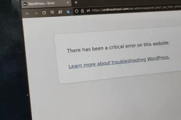

Tips
3 CARA Mengatasi WordPress Galat Secara Efektif
Jika Anda pernah membuka situs WordPress dan menemukan pesan error seperti “Establishing a Database Connection” atau halaman putih kosong, Anda tidak sendirian. Banyak pemilik situs mengalami hal serupa, dan itu …